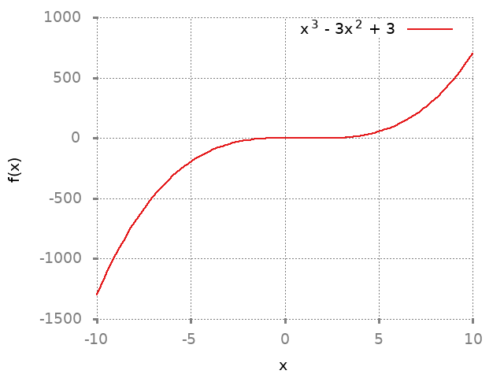

1 Concavity
1.1 Solution 1
1.1.1 Solution a
| Property | Interval |
|---|---|
| Concave up | \([r,s], [s,t], [u,v]\) |
| Concave down | \([p,q], [q,r], [t,v]\) |
| Inflection point | r,t,v |
1.1.2 Solution b
| Property | Interval/Points |
|---|---|
| Concave up | \([r,s],[s,t],[t,u],[u,v]\) |
| Concave down | \([p,q],[q,r],[v,w]\) |
| Inflection point | r,v |
1.2 Solution 2
set terminal png notransparent nointerlace rounded font "Alegreya, 14" set xlabel "x" set ylabel "f(x)" set grid set key right top plot x**3 - 3*(x**2) + 3 title "x^3 - 3x^2 + 3" ls 1

\(f(x) = x^3 - 3x^2 + 3\)
Domain: \((-\infty, \infty)\)
\(f'(x) = 3x^2 - 6x\)
There are no points where \(f\) is not differentiable but there are two points where the derivative is \(0\).
\(x=0,2\)
\(f''(x) = 6x-6\)
Notice that \(f, f', f''\) are all continous everywhere. Clearly \(f'(x) = 0\) when \(x=0,2\). \(f''(x) = 0\) when \(x=1\)
Now let's test sample points:
| Function | Value |
|---|---|
| f'(-1) | 9 > 0 |
| f'(1) | -3 < 0 |
| f'(3) | 9 > 0 |
| f''(0) | -6 < 0 |
| f''(2) | 6 > 0 |
todo
| Property | Value |
|---|---|
| \((-\infty, 0]\) | Strictly increasing, concave down |
| \([0,2]\) | Strictly decreasing, concave up and down |
| \([2,\infty)\) | Strictly increasing, concave up |
| Inflection point | 1 |
| Local maxima | 0 |
| Local minima | 2 |
1.3 Solution 3
set terminal png notransparent nointerlace rounded font "Alegreya, 14" set xlabel "x" set ylabel "g(x)" set grid set key right top plot x**3 - 6*(x**2) - 15*x - 20 title "x^3 + 6x^2 -15x - 20" ls 1

\(g(x) = x^3 + 6x^2 - 15x - 20\)
Domain: \((-\infty, \infty)\)
\(g'(x) = 3x^2 + 12x - 15\)
\(g''(x) = 6x + 12\)
Notice that \(g, g', g''\) are all continous everywhere. \(g'(x) = 0\) where \(x = -5, 1\). \(g''(x) = 0\) when \(x=-2\).
Now let's test sample points:
| Function | Value |
|---|---|
| g'(-6) | 21 > 0 |
| g'(-4) | -15 < 0 |
| g'(0) | -15 < 0 |
| g'(2) | 21 > 0 |
| g''(-3) | -6 < 0 |
| g''(-1) | 6 > 0 |
todo
| Property | Value |
|---|---|
| \((-\infty, -5]\) | Strictly increasing |
| \([-5,1]\) | Strictly decreasing |
| \([1,\infty)\) | Strictly increasing |
| Inflection point | -2 |
| Local maxima | -5 |
| Local minima | 1 |
| \((-\infty, -2]\) | Concave down |
| \([-2, \infty)\) | Concave up |
1.4 Solution 4
set terminal png notransparent nointerlace rounded font "Alegreya, 14" set xlabel "x" set ylabel "f(x)" set grid set key right top plot ((x**4)/4) - ((2*(x**3))/3) - ((15*(x**2))/2) title "x^4/4 - 2x^3/3 - 15x^2/2" ls 1
\(f(x) = \dfrac{x^4}{4} - \dfrac{2x^3}{3} - \dfrac{15x^2}{2}\)
\(f'(x) = x^3 - 2x^2 - 15x\)
\(f''(x) = 3x^2 - 4x - 15\)
Notice that \(f, f', f''\) are all continous everywhere. \(f'(x) = 0\) when \(x=-3,0,5\). \(f''(x) = 0\) when \(x=\dfrac{-5}{3}, 3\).
Now let's test sample points:
| Function | Value |
|---|---|
| f'(-4) | -36 < 0 |
| f'(-2) | 14 < 0 |
| f'(1) | -16 < 0 |
| f'(4) | -28 > 0 |
| f'(6) | 54 < 0 |
| f''(-2) | 5 > 0 |
| f''(-1) | -8 < 0 |
| f''(2) | -11 < 0 |
| f''(4) | 17 > 0 |
todo
| Property | Value |
|---|---|
| \((-\infty, -3]\) | Strictly decreasing |
| \([-3,0]\) | Strictly increasing |
| \([0,5]\) | Strictly decreasing |
| \([5,\infty)\) | Strictly increasing |
| \((-\infty, -5/3]\) | Concave up |
| \([-5/3, 3]\) | Concave down |
| \([3, \infty)\) | Concave up |
1.5 Solution 5
set terminal png notransparent nointerlace rounded font "Alegreya, 14" set xlabel "x" set ylabel "f(x)" set grid set key right top plot ((x**5)/5) - (x**4) + 20 title "x^5/5 - x^4 + 20" ls 1
\(f(x) = \dfrac{x^5}{5} - x^4 + 20\)
\(f'(x) = x^4 - 4x^3\)
\(f''(x) = 4x^3 - 12x^2\)
Notice that \(f, f', f''\) are all continous everywhere. \(f'(x) = 0\) when \(x=0,4\). \(f''(x) = 0\) when \(x=0,3\).
Now let's test sample points:
| Function | Value |
|---|---|
| f'(-1) | 5 > 0 |
| f'(1) | -3 < 0 |
| f'(3) | -27 < 0 |
| f'(5) | 125 > 0 |
| f''(-1) | -16 < 0 |
| f''(1) | -8 < 0 |
| f''(2) | -16 < 0 |
| f''(4) | 64 > 0 |
todo
| Property | Value |
|---|---|
| \((-\infty, 0]\) | Strictly increasing |
| \([0,4]\) | Strictly decreasing |
| \([4,\infty)\) | Strictly increasing |
| \((-\infty,3]\) | Concave down |
| \([3, \infty)\) | Concave up |
| Local maximum | 0 |
| Local minimum | 4 |
| Inflection point | 3 |
1.6 Solution 6
set terminal png notransparent nointerlace rounded font "Alegreya, 14" set xlabel "x" set ylabel "g(x)" set grid set key right top plot (-(x**3))*(x+4) title "-x^3(x+4)" ls 1
\(g(x) = -x^3(x+4)\)
Domain: \((-\infty, \infty)\)
\(g(x) = -x^4 - 4x^3\)
\(g'(x) = -4x^3 - 12x^2\)
\(g''(x) = -12x^2 - 24x\)
Notice that \(g, g', g''\) are all continous everywhere. \(g'(x) = 0\) when \(x=-3,0\). \(g''(x) = 0\) when \(x=-2,0\).
Now let's test sample points:
| Function | Value |
|---|---|
| g'(-4) | 64 > 0 |
| g'(-2) | -16 < 0 |
| g'(-1) | -8 < 0 |
| g'(1) | -16 > 0 |
| g''(-3) | 396 > 0 |
| g''(-1) | 36 > 0 |
| g''(1) | 36 < 0 |
todo
| Property | Value |
|---|---|
| \((-\infty, -3]\) | Strictly increasing |
| \([-3,\infty)\) | Strictly decreasing |
| \((-\infty, 0]\) | Concave up |
| \([0, \infty)\) | Concave down |
| Local maximum | -3 |
| Local minimum | None |
| Inflection point | 0 |
1.7 Solution 7
\(f(x) = \sqrt[3]{x}\)
From theorem 2.7.8, \(f(x)\) is continous on \((-\infty, \infty)\).
Domain: \((-\infty, \infty)\)
\(f'(x) = \dfrac{1}{3}x^{-2/3}\)
\(f''(x) = \dfrac{-2}{9} x^{-5/3}\)
Critical number of \(f\) is \(0\) since \(f'(x)\) is not defined at \(0\).
\(f\) is continous on interval \((-\infty, 0]\) and differentiable on the interior of the interval.
Appying theorem 4.4.3, we know that \(f''(x) > 0\). Hence \(f\) is concave up on \((\-infty, 0]\). With similar reasoning, one can deduce that it is concave down on \([0, \infty)\)
| Function | Value |
|---|---|
| f'(-1) | 1 |
| f'(1) | 1 |
So, \(f\) is strictly increasing on \((-\infty, \infty)\).
1.8 Solution 8
set terminal png notransparent nointerlace rounded font "Alegreya, 14" set xlabel "x" set ylabel "g(x)" set grid set key right top plot (x**2) + sqrt(x) title "x^2 + sqrt(x)" ls 1
\(g(x) = x^2 + \sqrt{x}\)
From theorem 2.7.8, \(\sqrt{x}\) is continous on \([0, \infty)\)
So, the domain of \(g(x)\) is \([0, \infty)\)
\(g'(x) = 2x + \dfrac{1}{2\sqrt{x}}\)
\(g''(x) = 2 + \dfrac{1}{2}x^{-3/2} = 2 + \dfrac{1}{2x^{3/2}}\)
\(g'(x) = 0\) when \(x = \emptyset\). \(g''(x)\) is not defined when \(x=0\). Applying theorem 4.4.3, we know that \(g''(x) > 0\) for interior of \([0, \infty)\).
| Property | Value |
|---|---|
| \([0,\infty)\) | Concave up |
| \([0, \infty)\) | Strictly increasing |
1.9 Solution 9
set terminal png notransparent nointerlace rounded font "Alegreya, 14" set xlabel "x" set ylabel "f(x)" set grid set key right top plot 3*(x**(1.666)) - 5*x title "3x^(5/3) - 5x" ls 1
\(f(x) = 3x^{5/3} - 5x\)
\(f'(x) = 5x^{2/3} - 5\)
\(f''(x) = \dfrac{10}{3}x^{-1/3} = \dfrac{10}{3x^{1/3}}\)
Domain: \((-\infty, \infty)\)
\(f'(x) = 0\) when \(x=1,-1\). \(f''(x) = 0\) is undefined. Let's try to find when \(f''(x) > 0\) and \(f''(x) < 0\)
\(f''(x) = \dfrac{10}{3x^{1/3}}\)
So for any negative number it will be \(f''(x) < 0\) and for any positive number it will be \(f''(x) < 0\).
| Property | Value |
|---|---|
| Concave up | (-∞, 0] |
| Concave down | [0, ∞) |
| Function | Value |
|---|---|
| f'(-1) | 0 |
| f'(0) | -5 < 0 |
| f'(-2) | 2.937 > 0 |
| f'(2) | 2.937 > 0 |
todo
| Property | Value |
|---|---|
| \((-\infty, -1]\) | Strictly increasing |
| \([-1, 1]\) | Strictly decreasing |
| \([1,\infty)\) | Strictly increasing |
1.10 Solution 10
set terminal png notransparent nointerlace rounded font "Alegreya, 14" set xlabel "x" set ylabel "f(x)" set grid set key right top plot 1/(x**2 + 3) title "1/(x^2 + 3)" ls 1
\(f(x) = \dfrac{1}{x^2+3} = (x^2 + 3)^{-1}\)
\(f'(x) = -(x^2+3)^{-2}(2x)\)
\(= \dfrac{2x}{(x^2+3)^2}\)
\(f''(x) = -(2x)(x^2+3)^{-3}.-2.2x + (x^2+3)^{-2}.-2\)
\(= 8x^2(x^2+3)^{-3}-2(x^2 + 3)^{-2}\)
\(= \dfrac{8x^2}{(x^2+3)^3} - \dfrac{2}{(x^2+3)^2}\)
\(= \dfrac{8x^2}{(x^2+3)^3} - \dfrac{2(x^2+3)}{(x^2+3)^3}\)
\(= \dfrac{8x^2-2x^2-6}{(x^2+3)^3}\)
\(= \dfrac{6x^2-6}{(x^2+3)^3}\)
\(f'(x) = 0\) when \(x =0\)
\(f''(x) = 0\) when \(x=1,-1\)
| Function | Value |
|---|---|
| f'(-1) | 0.125 > 0 |
| f'(1) | -0.125 < 0 |
| f''(0) | -0.22 < 0 |
| f''(2) | 0.05 > 0 |
| f''(-2) | 0.05 > 0 |
todo
| Property | Value |
|---|---|
| \((-\infty, 0]\) | Strictly increasing |
| \([0,\infty)\) | Strictly decreasing |
| \((-\infty,1]\) | Concave down |
| \([1, \infty)\) | Concave up |
1.11 Solution 11
set terminal png notransparent nointerlace rounded font "Alegreya, 14" set xlabel "x" set ylabel "f(x)" set grid set key right top plot x/(x**2 + 3) title "x/(x^2 + 3)" ls 1
\(f(x) = \dfrac{x}{x^2+3}\)
\(f(x) = x(x^2+3)^{-1}\)
\(f'(x) = x.-1.(x^2+3)^{-2}.2x + (x^2+3)^{-1}\)
\(= \dfrac{-2x^2}{(x^2+3)^2} + \dfrac{1}{x^2+3}\)
\(= \dfrac{3-x^2}{(x^2+3)^2}\)
\(f''(x) = (3-x^2).-2(x^2+3)^{-3}.2x + (x^2+3)^{-2}(-2x)\)
\(= \dfrac{-4x(3-x^2)}{(x^2+3)^3} - \dfrac{2x}{(x^2+3)^2}\)
\(= \dfrac{-12x+4x^3-2x^3-6x}{(x^2+3)^3}\)
\(= \dfrac{2x^3-18x}{(x^2+3)^3}\)
\(= \dfrac{2x(x^2-9)}{(x^2+3)^3}\)
\(f'(x) = 0\) when \(x= \sqrt[3]{3}, -\sqrt[3]{3}\). \(f''(x) = 0\) when \(x=0,3,-3\).
| Function | Value |
|---|---|
| f'(1) | 0.125 > 0 |
| f'(2) | -0.02 < 0 |
| f'(-1) | 0.125 > 0 |
| f'(-2) | -0.02 < 0 |
| f''(-1) | 0.25 > 0 |
| f''(1) | -0.25 < 0 |
| f''(2) | -0.05 < 0 |
| f''(-2) | 0.05 > 0 |
| f''(4) | 0.008 > 0 |
| f''(-4) | -0.008 < 0 |
todo
| Property | Value |
|---|---|
| \([-\sqrt[3]{3},\sqrt[3]{3}]\) | Strictly increasing |
| \((-\infty, -\sqrt[3]{3}]\) | Strictly decreasing |
| \([\sqrt[3]{3}, \infty)\) | Strictly decreasing |
| \([-3,0], [3, \infty)\) | Concave up |
| \((-\infty, -3], [0,3]\) | Concave down |
| \(-\sqrt[3]{3}\) | Local minima |
| \(-\sqrt[3]{3}\) | Local maxima |
| -3,0,3 | Inflection point |
1.12 Solution 12
set terminal png notransparent nointerlace rounded font "Alegreya, 14" set xlabel "x" set ylabel "f(x)" set grid set key right top plot (x**2)/(x**2 + 3) title "x^2/(x^2 + 3)" ls 1
\(f(x) = \dfrac{x^2}{x^2+3}\)
\(f(x) = x^2(x^2+3)^{-1}\)
\(f'(x) = x^2.-1(x^2+3)^{-2}.2x + (x^2+3)^{-1}.2x\)
\(= \dfrac{-2x^3}{(x^2+3)^2} + \dfrac{2x}{x^2+3}\)
\(= \dfrac{-2x^3}{(x^2+3)^2} + \dfrac{2x^3 + 6x}{(x^2+3)^2}\)
\(= \dfrac{6x}{(x^2+3)^2}\)
\(f''(x) = (x^2+3)^{-2}.6 + 6x.-2(x^2+3)^{-3}.2x\)
\(= \dfrac{6}{(x^2+3)^2} + \dfrac{12x^2.-2}{(x^2+3)^3}\)
\(= \dfrac{6}{(x^2+3)^2} - \dfrac{24x^2}{(x^2+3)^3}\)
\(= \dfrac{6x^2 + 18 - 24x^2}{(x^2+3)^3}\)
\(= \dfrac{18 - 18x^2}{(x^2+3)^3}\)
\(f'(x) = 0\) when \(x=0\)
\(f''(x) = 0\) when \(x=1,-1\)
(defun singleDerivative (x) (let* ((num (* 6 x)) (den (expt (+ (expt x 2) 3) 2)) (res (/ num den))) res) )
singleDerivative
(singleDerivative -1.0)
-0.375
(singleDerivative 1.0)
0.375
(defun doubleDerivative (x) (let* ((num (- 18 (* 18 (expt x 2)))) (den (expt (+ (expt x 2) 3) 3)) (res (/ num den))) res ))
doubleDerivative
(doubleDerivative 0.0)
0.6666666666666666
(doubleDerivative 2.0)
-0.15743440233236153
(doubleDerivative -2.0)
-0.15743440233236153
| Function | Value |
|---|---|
| f'(-1) | -0.0375 < 0 |
| f'(1) | 0.375 > 0 |
| f''(0) | 0.666 > 0 |
| f''(2) | -0.15 < 0 |
| f''(-2) | -0.15 < 0 |
todo
| Property | Value |
|---|---|
| \([0,\infty)\) | Strictly increasing |
| \((-\infty, 0]\) | Strictly decreasing |
| 0 | Local minima |
| \([-1,1]\) | Concave up |
| \((-\infty, -1], [1, \infty)\) | Concave down |
| \(-1,1\) | Inflection points |
1.13 Solution 13
set terminal png notransparent nointerlace rounded font "Alegreya, 14" set xlabel "x" set ylabel "f(x)" set grid set key right top plot (x**3)/(x**2 + 3) title "x^3/(x^2 + 3)" ls 1
\(g(x) = \dfrac{x^3}{x^2+3}\)
\(g(x) = x^3(x^2+3)^{-1}\)
Domain: \((-\infty, \infty)\)
\(g'(x) = 3x^2(x^2+3)^{-1} + x^3.-1(x^2+3)^{-2}.23x\)
\(= \dfrac{3x^2}{x^2+3} - \dfrac{2x^4}{(x^2+3)^2}\)
\(= \dfrac{3x^4 + 9x^2 - 2x^4}{(x^2+3)^2}\)
\(= \dfrac{x^4 + 9x^2}{(x^2+3)^2}\)
\(g''(x) = -2(x^2+3)^{-3}.2x(x^4+9x^2) + \dfrac{4x^3+18x}{(x^2+3)^2}\)
\(= \dfrac{-4x(x^4+9x^2)}{(x^2+3)^3} + \dfrac{4x^3+18x}{(x^2+3)^2}\)
\(= \dfrac{-4x^2(x^3+9x)}{(x^2+3)^3} + \dfrac{(4x^3 + 18x)(x^2+3)}{(x^2+3)^3}\)
\(= \dfrac{-4x^5-36x^3 + 4x^5 + 30x^3 + 54x}{(x^2+3)^3}\)
\(= \dfrac{54x-6x^3}{(x^2+3)^3}\)
\(= \dfrac{6x(9-x^2)}{(x^2+3)^3}\)
\(f'(x) = 0\) when \(x=0\). \(f''(x) = 0\) when \(x=-3,0,3\)
(defun singleDerivative (x) (let* ((num (+ (expt x 4) (* 9 (expt x 2)))) (den (expt (+ (expt x 2) 3) 2)) (res (/ num den))) res ))
singleDerivative
(singleDerivative -1.0)
0.625
(singleDerivative 1.0)
0.625
(defun doubleDerivative (x) (let* ((num (* 6 x (- 9 (expt x 2)))) (den (expt (+ (expt x 2) 3) 3)) (res (/ num den))) res ))
doubleDerivative
(doubleDerivative -4.0)
0.024493366379938767
(doubleDerivative -2.0)
-0.1749271137026239
(doubleDerivative -1.0)
-0.75
(doubleDerivative 1.0)
0.75
(doubleDerivative 2.0)
0.1749271137026239
(doubleDerivative 4.0)
-0.024493366379938767
| Function | Value |
|---|---|
| f'(-1) | 0.625 > 0 |
| f'(1) | 0.625 > 0 |
| f''(-4) | 0.02 > 0 |
| f''(-2) | -0.17 < 0 |
| f''(-1) | -0.75 < 0 |
| f''(1) | 0.75 > 0 |
| f''(2) | 0.17 > 0 |
| f''(4) | -0.02 < 0 |
todo
| Property | Value |
|---|---|
| Strictly increasing | \((-\infty, \infty)\) |
| Concave up | \((-\infty, -3], [0,3]\) |
| Concave down | \([-3,0], [3,\infty)\) |
| Inflection point | -3,0,3 |
1.14 Solution 14
set terminal png notransparent nointerlace rounded font "Alegreya, 14" set xlabel "x" set ylabel "f(x)" set grid set key right top plot (16*((x**2)+1)**(0.5)) - (x**2) title "16(x^2+1)^{0.5} - x^2" ls 1
\(f(x) = 16\sqrt{x^2+1} - x^2\)
\(f(x) = 16(x^2+1)^{1/2} - x^2\)
\(f'(x) = 8(x^2+1)^{-1/2}.2x - 2x\)
\(= \dfrac{16x}{\sqrt{x^2+1}} - 2x\)
\(f''(x) = \dfrac{16}{\sqrt{x^2+1}} + 16x.-\dfrac{1}{2}(x^2+1)^{-3/2}.2x - 2\)
\(= \dfrac{16}{\sqrt{x^2+1}} - \dfrac{8x.2x}{(x^2+1)^{3/2}} - 2\)
\(= \dfrac{16x^2+16-16x}{(x^2+1)^{3/2}} - 2\)
\(- \dfrac{16}{(x^2+1)^{3/2}} - 2\)
\(f'(x) = 0\) when \(x=0, 3\sqrt{7}, -3\sqrt{7}\). \(f''(x) = 0\) when \(x=-\sqrt{2}, \sqrt{2}\)
(defun singleDerivative (x) (let* ((num (* 16 x)) (den (sqrt (+ (expt x 2) 1))) (res (/ num den)) (sol (- res (* 2 x)))) sol ))
singleDerivative
(singleDerivative -1.0)
-9.31370849898476
(singleDerivative 1.0)
9.31370849898476
(singleDerivative 6.0)
3.7823027813143
(singleDerivative 8.0)
-0.12355397258131617
(singleDerivative -6.0)
-3.7823027813143
(singleDerivative -8.0)
0.12355397258131617
(defun doubleDerivative (x) (let* ((num 16) (den (expt (+ 1 (expt x 2)) 1.5)) (res (/ num den)) (sol (- res 2))) sol ))
doubleDerivative
(doubleDerivative 0.0)
14.0
(doubleDerivative 2.0)
-0.5689164944001346
(doubleDerivative -2.0)
-0.5689164944001346
| Function | Value |
|---|---|
| f'(-1) | -9.31 < 0 |
| f'(1) | 9.31 > 0 |
| f'(6) | 3.78 > 0 |
| f'(8) | -0.12<0 |
| f'(-6) | -3.7 < 0 |
| f'(-8) | 0.12 > 0 |
| f''(0) | 14 > 0 |
| f''(2) | -0.56 < 0 |
| f''(-2) | -0.56 < 0 |
todo
| Property | Value |
|---|---|
| Strictly increasing | \([0, 3\sqrt{7}], (-\infty, -3\sqrt{7}]\) |
| Strictly decreasing | \([-3\sqrt{7}, 0], [3\sqrt{7}, \infty)\) |
| Concave up | \([-\sqrt{3}, \sqrt{3}]\) |
| Concave down | \((-\infty, -\sqrt{3}], [\sqrt{3}, \infty)\) |
| Inflection point | \(\sqrt{3}, -\sqrt{3}\) |
1.15 Solution 15
set terminal png notransparent nointerlace rounded font "Alegreya, 14" set xlabel "x" set ylabel "f(x)" set grid set key right top plot (x + 2*sin(x)) title "x + 2sin(x)" ls 1
\(f(x) = x + 2\sin x\)
Domain: \([0, 2\pi]\)
\(f'(x) = 1 + 2\cos x\)
\(f''(x) = -2\sin x\)
\(f'(x) = 0\) when \(x = \dfrac{4\pi}{3}, \dfrac{2\pi}{3}\)
\(f''(x) = 0\) when \(x = 0, \pi, 2\pi\)
(defun singleDerivative (x) (let* ((num (+ 1 (* 2 (cos x))))) num ))
singleDerivative
(singleDerivative pi)
-1.0
(singleDerivative (* 2 pi))
3.0
(singleDerivative 0)
3.0
(singleDerivative (* 1.5 pi))
0.9999999999999997
(defun doubleDerivative (x) (let* ((num (* -2 (* 2 (sin x))))) num ))
doubleDerivative
(doubleDerivative pi)
-4.898587196589413e-16
(doubleDerivative 0)
-0.0
(doubleDerivative (* 1.5 pi))
4.0
(doubleDerivative (/ (* 2 pi) 3))
-3.464101615137755
(doubleDerivative (/ (* 4 pi) 3))
3.4641016151377535
| Function | Value |
|---|---|
| \(f'(\pi)\) | -1 < 0 |
| \(f'(1.5\pi)\) | 1 > 0 |
| \(f'(2\pi)\) | 3 > 0 |
| f'(0) | 3 > 0 |
| \(f''(\pi)\) | 0 |
| \(f''(1.5\pi)\) | 4 > 0 |
| \(f''(\dfrac{2\pi}{3})\) | -3.4 < 0 |
| \(f''(\dfrac{4\pi}{3})\) | 3.4 > 0 |
todo
| Property | Value |
|---|---|
| Strictly increasing | \([0, \dfrac{2\pi}{3}], [\dfrac{4\pi}{3}, 2\pi]\) |
| Strictly decreasing | \([\dfrac{2\pi}{3}, \dfrac{4\pi}{3}]\) |
| Concave up | \([0, \pi]\) |
| Concave down | \([\pi, 2\pi]\) |
| Inflection point | \(\pi\) |
| Local minima | \(\dfrac{4\pi}{3}\) |
| Local maxima | \(\dfrac{2\pi}{3}\) |
1.16 Solution 16
set terminal png notransparent nointerlace rounded font "Alegreya, 14" set xlabel "x" set ylabel "g(x)" set grid set key right top plot [0 : 2*pi] (x**2 + 4*sin(x)) title "x^2 + 4sin(x)" ls 1
\(g(x) = x^2 + 4\sin x\)
Domain: \([0, 2\pi]\)
\(g'(x) = 2x + 4\cos x\)
\(g''(x) = 2 - 4\sin x\)
\(g'(x) \neq 0\) on \([0, 2\pi]\)
\(g''(x) = 0\) when \(x = \dfrac{\pi}{6}, \dfrac{5\pi}{6}\)
(defun doubleDerivative (x) (let* ((num (- 2 (* 4 (sin x))))) num ))
doubleDerivative
(doubleDerivative 0.0)
2.0
(doubleDerivative (/ pi 2.0))
-2.0
(doubleDerivative pi)
1.9999999999999996
| Function | Value |
|---|---|
| g''(0) | 2 > 0 |
| \(g''(\dfrac{\pi}{2})\) | -2 < 0 |
| \(g''(\pi)\) | 2 > 0 |
| \(g'(\pi)\) | 2.28 > 0 |
todo
| Property | Value |
|---|---|
| Strictly increasing | \((-\infty, \infty)\) |
| Concave up | \((-\infty, \dfrac{\pi}{6}], [\dfrac{5\pi}{6}, \pi]\) |
| Concave down | \([\dfrac{\pi}{6}, \dfrac{5\pi}{6}]\) |
1.17 Solution 17
set terminal png notransparent nointerlace rounded font "Alegreya, 14" set xlabel "x" set ylabel "f(x)" set grid set key right top plot (3*tan(x) - 4*x) title "3tan x - 4x" ls 1
\(f(x) = 3\tan x - 4x\)
Domain: \((-\dfrac{\pi}{2}, \dfrac{\pi}{2})\)
\(f'(x) = 3\sec^2 x - 4\)
\(f''(x) = 6\sec x \sec x \tan x = 6 \sec^2 x \tan x\)
\(f'(x) = 0\) when \(x = \dfrac{-\pi}{6}, \dfrac{\pi}{6}\)
\(f''(x) = 0\) when \(x = 0\)
| Function | Value |
|---|---|
| \(f'(\dfrac{\pi}{7})\) | -0.3 < 0 |
| \(f'(\dfrac{\pi}{4})\) | 2 > 0 |
| \(f'(\dfrac{-\pi}{7})\) | -0.3 < 0 |
| \(f'(\dfrac{-\pi}{4})\) | 2 < 0 |
| \(f''(\dfrac{\pi}{4})\) | 12 > 0 |
| \(f''(\dfrac{-\pi}{4})\) | -12 < 0 |
todo
| Property | Value |
|---|---|
| Strictly increasing | $(-\dfrac{\pi}{2}, \dfrac{\pi}{6}], [\dfrac{\pi}{6}, \dfrac{\pi}{2}) $ |
| Strictly decreasing | \([\dfrac{-\pi}{6}, \dfrac{\pi}{6}]\) |
| Concave up | \([0, \dfrac{\pi}{2})\) |
| Concave down | \((\dfrac{-\pi}{2}, 0]\) |
| Inflection point | 0 |
| Local minimum | \(\dfrac{\pi}{6}\) |
| Local maximum | \(-\dfrac{\pi}{6}\) |
1.18 Solution 18
Suppose \(f\) is concave up on interval \(I\).
\(x_1, x_2, x_3, x_4 \in I\)
\(x_1 < x_2 < x_3 < x_4\)
1.18.1 Solution a
Slope of secant line at \(x = x_1\) and \(x = x_2\)
\(m_1 = \dfrac{f(x_2) - f(x_1)}{x_2 - x_1}\)
Slope of secant line at \(x = x_3\) and \(x = x_4\)
\(m_2 = \dfrac{f(x_3) - f(x_4)}{x_3 - x_4}\)
We need to prove that \(m_1 < m_2\)
From theorem 4.4.2,
\(\dfrac{f(x_2) - f(x_1)}{x_2 - x_1} < \dfrac{f(x_3) - f(x_2)}{x_3 - x_2}\)
Also since $x2 < x3 < x4,
\(\dfrac{f(x_3) - f(x_2)}{x_3 - x_2} < \dfrac{f(x_4) - f(x_3)}{x_4 - x_3}\)
Combining both,
\(\dfrac{f(x_2) - f(x_1)}{x_2 - x_1} < \dfrac{f(x_4) - f(x_3)}{x_4 - x_3}\)
\(\dfrac{f(x_2) - f(x_1)}{x_2 - x_1} < \dfrac{f(x_3) - f(x_4)}{x_3 - x_4}\)
\(m_1 < m_2\)
1.18.2 Solution b
Slope of secant line at \(x = x_1\) and \(x = x_3\)
\(m_1 = \dfrac{f(x_3) - f(x_1)}{x_3 - x_1}\)
Slope of secant line at \(x = x_2\) and \(x = x_4\)
\(m_2 = \dfrac{f(x_4) - f(x_2)}{x_4 - x_2}\)
We need to prove that \(m_1 < m_2\)
We know that
\(c,d > 0 \land \dfrac{a}{c} < \dfrac{b}{d} \implies \dfrac{a}{c} < \dfrac{a + b}{c+d} < \dfrac{b}{d}\)
We know that \(x_1 < x_3 < x_4\)
From theorem 4.4.2,
\(\dfrac{f(x_3) - f(x_1)}{x_3 - x_1} < \dfrac{f(x_4) - f(x_3)}{x_4 - x_3}\)
Applying the inequality law,
\(\dfrac{f(x_3)-f(x_1)}{x_3 - x_1} < \dfrac{f(x_4) - f(x_1)}{x_4 - x_1} < \dfrac{f(x_4) - f(x_3)}{x_4 - x_3}\)
We know that \(x_1 < x_2 < x_4\)
From theorem 4.4.2,
\(\dfrac{f(x_2) - f(x_1)}{x_2 - x_1} < \dfrac{f(x_4) - f(x_2)}{x_4 - x_2}\)
Applying the inequality law,
\(\dfrac{f(x_2)-f(x_1)}{x_2 - x_1} < \dfrac{f(x_4) - f(x_1)}{x_4 - x_1} < \dfrac{f(x_4) - f(x_2)}{x_4 - x_2}\)
Combining both,
\(\dfrac{f(x_3)-f(x_1)}{x_3 - x_1} < \dfrac{f(x_4) - f(x_1)}{x_4 - x_1} < \dfrac{f(x_4) - f(x_2)}{x_4 - x_2}\)
\(\dfrac{f(x_3)-f(x_1)}{x_3 - x_1} < \dfrac{f(x_4) - f(x_2)}{x_4 - x_2}\)
\(m_1 < m_2\)
1.19 Solution 19
Domain of \(f\) is interval \(I\).
Domain of \(g\) is interval \(J\)
\(\forall x \in J g(x) \in I\)
1.19.1 Solution a
Suppose \(f\) is increasing on \(I\).
Suppose \(f\) is concave up on \(I\).
Suppose \(g\) is increasing on \(J\).
Suppose \(g\) is concave up on \(J\).
We need to prove that \(f \circ g\) is concave up on \(J\).
Since \(f\) is increasing. Let's assume \(x_1 < x_2 < x_3 \in I\)
\(\dfrac{f(x_2)-f(x_1)}{x_2 - x_1} < \dfrac{f(x_3) - f(x_2)}{x_3 - x_2}\)
We know that \(x_1, x_2, x_3 \in I\) and \(\forall x \in J g(x) \in I\)
So, \(x_1 = g(a)\) where a is some arbitrary element in J.
So, \(\dfrac{f(g(y_2))-f(g(y_1))}{g(y_2) - g(y_1)} < \dfrac{f(g(x_3)) - f(g(x_2))}{g(y_3) - g(y_2)}\)
where \(g(y_2) = x_2, g(y_3) = x_3, g(y_1) = x_1\) .
We know from question 22 that \(f \circ g\) is also increasing on \(J\).
So, \(g(y_1) < g(y_2) < g(y_3)\)
So, \(\dfrac{f(g(y_2))-f(g(y_1))}{g(y_2) - g(y_1)} < \dfrac{f(g(x_3)) - f(g(x_2))}{g(y_3) - g(y_2)}\)
Hence \(f \circ g\) is concave up on \(J\).
1.19.2 Solution b
Counterexample with following property:
$f(x): $ Decreasing, Concave up
$g(x): $ Increasing, Concave up
\(g(x) = x^4\)
\(f(x) = -2\sqrt{x}\)
Domain: \([1, \infty)\)
\(f \circ g = f(g(x)) = f(x^4) = -2\sqrt{x^4} = -2x^2\)
\(h = f \circ g = -2x^2\)
\(h'(x) = -4x\)
\(h''(x) = 04 < 0\) and therefore \(f \circ g\) is concave down.